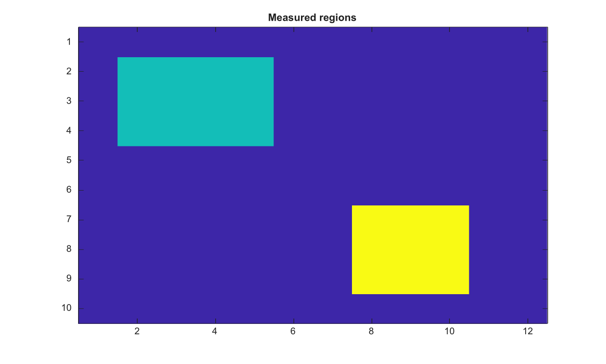

stats = regionprops(BW)
stats = regionprops(CC, properties)
stats = regionprops(L, properties)
stats = regionprops(regions, I, properties)
| Paramètre | Description |
|---|---|
| BW | Image binaire dont les composantes connexes definissent les regions. |
| CC | Structure de composantes connexes renvoyee par bwconncomp. |
| L | Matrice d'etiquettes entieres positives ou nulles. |
| I | Image d'intensite en niveaux de gris optionnelle de meme taille pour les mesures d'intensite. |
| properties | Nom de propriete, cell array de noms de proprietes, ou 'all'/'basic'. |
| Paramètre | Description |
|---|---|
| stats | Tableau de structures contenant un element par region mesuree. |
Mesure les proprietes de regions d image. Les images binaires utilisent les composantes connexes, les matrices de labels numeriques 2-D avec entiers positifs ou nuls utilisent une region par label positif, et les structures de composantes connexes peuvent etre passees directement. Les proprietes prises en charge incluent Area, Centroid, BoundingBox, PixelIdxList, PixelList, Image, SubarrayIdx, Extent, EquivDiameter, Perimeter, Orientation, MajorAxisLength, MinorAxisLength, Eccentricity, ConvexHull, ConvexImage, ConvexArea, Solidity et les mesures d intensite quand une image d intensite grayscale de meme taille est fournie.
BW=false(10,12); BW(2:4,2:5)=true; BW(7:9,8:10)=true;
S=regionprops(BW,'Area','BoundingBox','Centroid');
L=bwlabel(BW);
figure; imagesc(L); title('Measured regions');
BW = logical([1 0 0 1; 1 0 0 0; 0 0 1 1]);
I = [10 0 0 2; 20 0 0 0; 0 0 30 40];
S = regionprops(BW, I, 'Area', 'PixelValues', 'WeightedCentroid', 'Extent')| Version | Description |
|---|---|
| 2.0.0 | version initiale |